Мягкая мебель
Старинный диван
Реставрационная мастерская производит ремонт и реставрацию старых, старинных и антикварных диванов XIX и XX века.

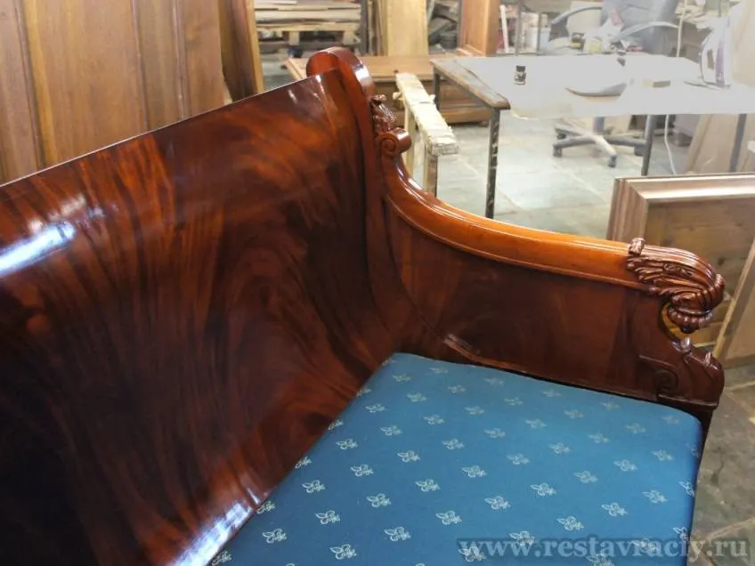
О чём рассказывает мастерская
- Ремонт пружинного дивана
- История дивана
- Названия диванов
- Диван красного дерева
- Спинка красное дерево
- Антикварный диван в гостиную
- Купить антикварный диван
- Реставрация антикварного дивана
- Реставрация пружинного дивана
- ПРОВАЛИЛАСЬ ПРУЖИНА ДИВАНА
В материале мастерской
Фотографии и детали


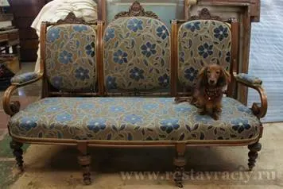
Открыть снимок у мастерской

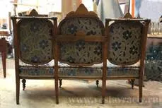
Открыть снимок у мастерской

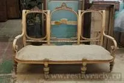
Открыть снимок у мастерской

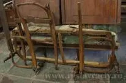
Открыть снимок у мастерской

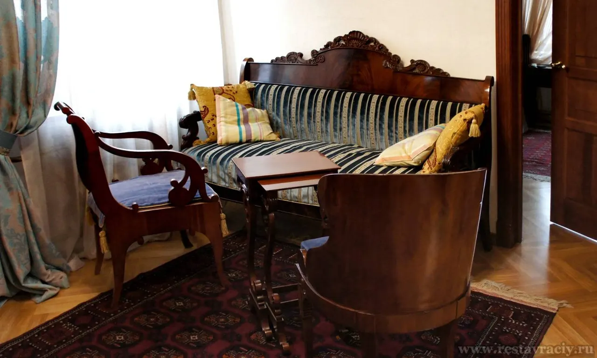
Открыть снимок у мастерской

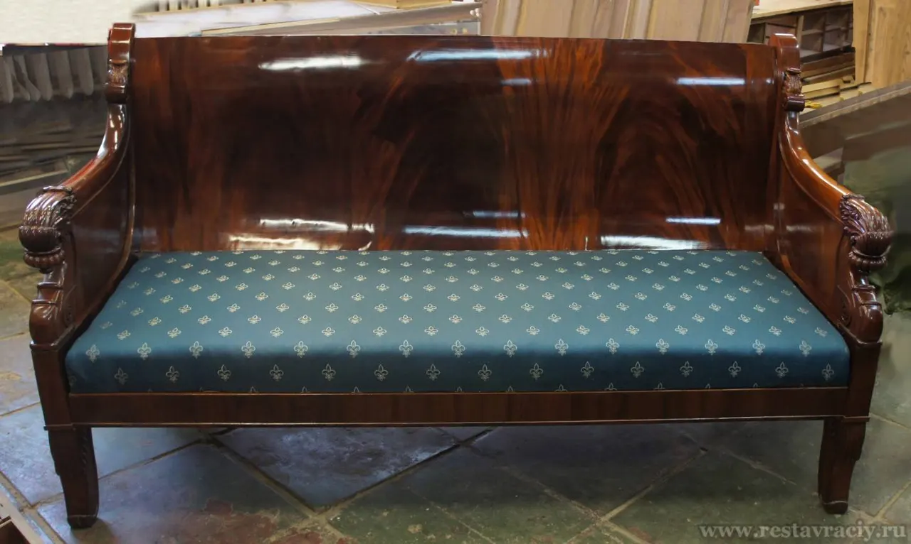
Открыть снимок у мастерской

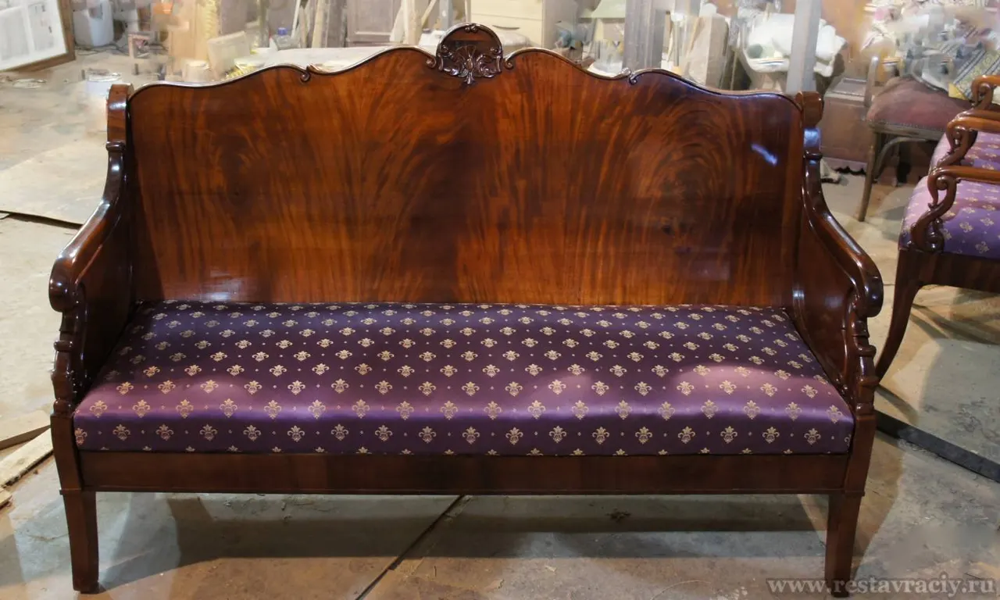
Открыть снимок у мастерской

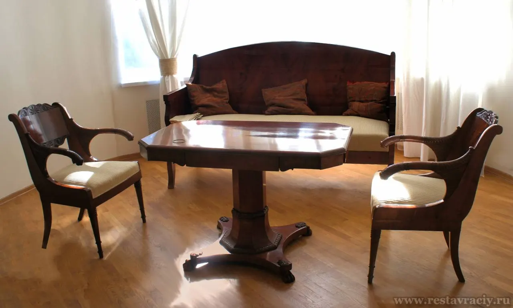
Открыть снимок у мастерской

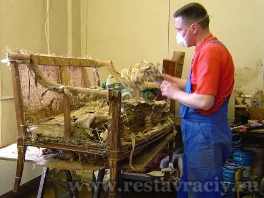
Открыть снимок у мастерской

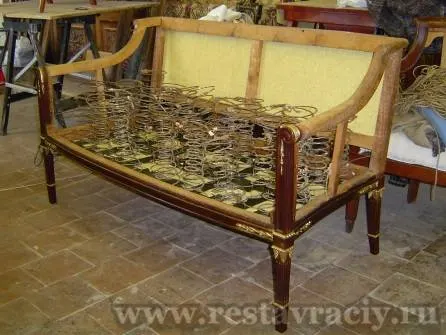
Открыть снимок у мастерской

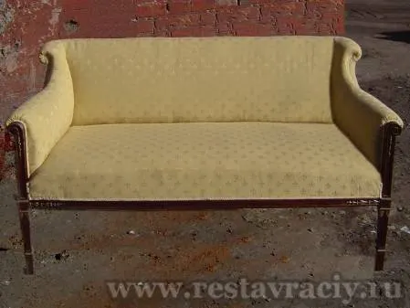
Открыть снимок у мастерской
Есть похожая вещь?
Подберите ракурсы для предварительной оценки.